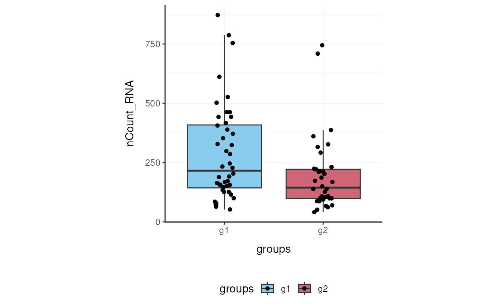
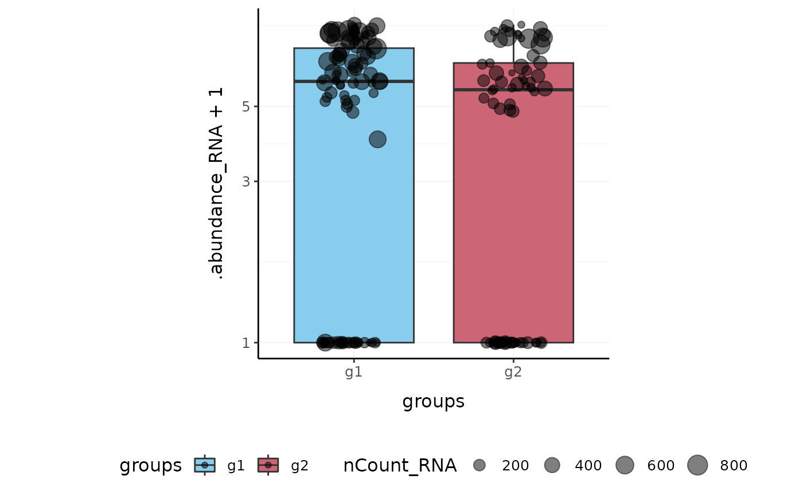

Overview of the tidyseurat package
Stefano Mangiola
2022-12-22
Source:vignettes/introduction.Rmd
introduction.Rmd
Brings Seurat to the tidyverse!
website: stemangiola.github.io/tidyseurat/
Please also have a look at
- tidySingleCellExperiment for tidy single-cell RNA sequencing analysis
- tidySummarizedExperiment for tidy bulk RNA sequencing analysis
- tidybulk for tidy bulk RNA-seq analysis
- nanny for tidy high-level data analysis and manipulation
- tidygate for adding custom gate information to your tibble
- tidyHeatmap for heatmaps produced with tidy principles
visual cue
Introduction
tidyseurat provides a bridge between the Seurat single-cell package (Butler et al. 2018; Stuart et al. 2019) and the tidyverse (Wickham et al. 2019). It creates an invisible layer that enables viewing the Seurat object as a tidyverse tibble, and provides Seurat-compatible dplyr, tidyr, ggplot and plotly functions.
Functions/utilities available
| Seurat-compatible Functions | Description |
|---|---|
all |
| tidyverse Packages | Description |
|---|---|
dplyr |
All dplyr APIs like for any tibble |
tidyr |
All tidyr APIs like for any tibble |
ggplot2 |
ggplot like for any tibble |
plotly |
plot_ly like for any tibble |
| Utilities | Description |
|---|---|
tidy |
Add tidyseurat invisible layer over a Seurat object |
as_tibble |
Convert cell-wise information to a tbl_df
|
join_features |
Add feature-wise information, returns a tbl_df
|
Installation
From CRAN
install.packages("tidyseurat")From Github (development)
devtools::install_github("stemangiola/tidyseurat")Create tidyseurat, the best of both worlds!
This is a seurat object but it is evaluated as tibble. So it is fully compatible both with Seurat and tidyverse APIs.
pbmc_small = SeuratObject::pbmc_smallIt looks like a tibble
pbmc_small## # A Seurat-tibble abstraction: 80 × 15
## # Features=230 | Cells=80 | Active assay=RNA | Assays=RNA
## .cell orig.…¹ nCoun…² nFeat…³ RNA_s…⁴ lette…⁵ groups RNA_s…⁶ PC_1 PC_2
## <chr> <fct> <dbl> <int> <fct> <fct> <chr> <fct> <dbl> <dbl>
## 1 ATGCCA… Seurat… 70 47 0 A g2 0 -0.774 -0.900
## 2 CATGGC… Seurat… 85 52 0 A g1 0 -0.0260 -0.347
## 3 GAACCT… Seurat… 87 50 1 B g2 0 -0.457 0.180
## 4 TGACTG… Seurat… 127 56 0 A g2 0 -0.812 -1.38
## 5 AGTCAG… Seurat… 173 53 0 A g2 0 -0.774 -0.900
## 6 TCTGAT… Seurat… 70 48 0 A g1 0 -0.774 -0.900
## 7 TGGTAT… Seurat… 64 36 0 A g1 0 -0.460 -1.19
## 8 GCAGCT… Seurat… 72 45 0 A g1 0 -0.900 -0.388
## 9 GATATA… Seurat… 52 36 0 A g1 0 -0.774 -0.900
## 10 AATGTT… Seurat… 100 41 0 A g1 0 -0.488 -1.16
## # … with 70 more rows, 5 more variables: PC_3 <dbl>, PC_4 <dbl>, PC_5 <dbl>,
## # tSNE_1 <dbl>, tSNE_2 <dbl>, and abbreviated variable names ¹orig.ident,
## # ²nCount_RNA, ³nFeature_RNA, ⁴RNA_snn_res.0.8, ⁵letter.idents,
## # ⁶RNA_snn_res.1But it is a Seurat object after all
pbmc_small@assays## $RNA
## Assay data with 230 features for 80 cells
## Top 10 variable features:
## PPBP, IGLL5, VDAC3, CD1C, AKR1C3, PF4, MYL9, GNLY, TREML1, CA2Preliminary plots
Set colours and theme for plots.
# Use colourblind-friendly colours
friendly_cols <- c("#88CCEE", "#CC6677", "#DDCC77", "#117733", "#332288", "#AA4499", "#44AA99", "#999933", "#882255", "#661100", "#6699CC")
# Set theme
my_theme <-
list(
scale_fill_manual(values = friendly_cols),
scale_color_manual(values = friendly_cols),
theme_bw() +
theme(
panel.border = element_blank(),
axis.line = element_line(),
panel.grid.major = element_line(size = 0.2),
panel.grid.minor = element_line(size = 0.1),
text = element_text(size = 12),
legend.position = "bottom",
aspect.ratio = 1,
strip.background = element_blank(),
axis.title.x = element_text(margin = margin(t = 10, r = 10, b = 10, l = 10)),
axis.title.y = element_text(margin = margin(t = 10, r = 10, b = 10, l = 10))
)
)We can treat pbmc_small effectively as a normal tibble for plotting.
Here we plot number of features per cell.
pbmc_small %>%
tidyseurat::ggplot(aes(nFeature_RNA, fill = groups)) +
geom_histogram() +
my_theme
Here we plot total features per cell.
pbmc_small %>%
tidyseurat::ggplot(aes(groups, nCount_RNA, fill = groups)) +
geom_boxplot(outlier.shape = NA) +
geom_jitter(width = 0.1) +
my_theme
Here we plot abundance of two features for each group.
pbmc_small %>%
join_features(features = c("HLA-DRA", "LYZ")) %>%
ggplot(aes(groups, .abundance_RNA + 1, fill = groups)) +
geom_boxplot(outlier.shape = NA) +
geom_jitter(aes(size = nCount_RNA), alpha = 0.5, width = 0.2) +
scale_y_log10() +
my_theme
Preprocess the dataset
Also you can treat the object as Seurat object and proceed with data processing.
pbmc_small_pca <-
pbmc_small %>%
SCTransform(verbose = FALSE) %>%
FindVariableFeatures(verbose = FALSE) %>%
RunPCA(verbose = FALSE)
pbmc_small_pca## # A Seurat-tibble abstraction: 80 × 17
## # Features=220 | Cells=80 | Active assay=SCT | Assays=RNA, SCT
## .cell orig.…¹ nCoun…² nFeat…³ RNA_s…⁴ lette…⁵ groups RNA_s…⁶ nCoun…⁷ nFeat…⁸
## <chr> <fct> <dbl> <int> <fct> <fct> <chr> <fct> <dbl> <int>
## 1 ATGCC… Seurat… 70 47 0 A g2 0 129 50
## 2 CATGG… Seurat… 85 52 0 A g1 0 119 51
## 3 GAACC… Seurat… 87 50 1 B g2 0 142 51
## 4 TGACT… Seurat… 127 56 0 A g2 0 155 56
## 5 AGTCA… Seurat… 173 53 0 A g2 0 174 52
## 6 TCTGA… Seurat… 70 48 0 A g1 0 139 50
## 7 TGGTA… Seurat… 64 36 0 A g1 0 132 42
## 8 GCAGC… Seurat… 72 45 0 A g1 0 129 48
## 9 GATAT… Seurat… 52 36 0 A g1 0 116 45
## 10 AATGT… Seurat… 100 41 0 A g1 0 145 40
## # … with 70 more rows, 7 more variables: PC_1 <dbl>, PC_2 <dbl>, PC_3 <dbl>,
## # PC_4 <dbl>, PC_5 <dbl>, tSNE_1 <dbl>, tSNE_2 <dbl>, and abbreviated
## # variable names ¹orig.ident, ²nCount_RNA, ³nFeature_RNA, ⁴RNA_snn_res.0.8,
## # ⁵letter.idents, ⁶RNA_snn_res.1, ⁷nCount_SCT, ⁸nFeature_SCTIf a tool is not included in the tidyseurat collection, we can use as_tibble to permanently convert tidyseurat into tibble.
pbmc_small_pca %>%
as_tibble() %>%
select(contains("PC"), everything()) %>%
GGally::ggpairs(columns = 1:5, ggplot2::aes(colour = groups)) +
my_theme
Identify clusters
We proceed with cluster identification with Seurat.
pbmc_small_cluster <-
pbmc_small_pca %>%
FindNeighbors(verbose = FALSE) %>%
FindClusters(method = "igraph", verbose = FALSE)
pbmc_small_cluster## # A Seurat-tibble abstraction: 80 × 19
## # Features=220 | Cells=80 | Active assay=SCT | Assays=RNA, SCT
## .cell orig.…¹ nCoun…² nFeat…³ RNA_s…⁴ lette…⁵ groups RNA_s…⁶ nCoun…⁷ nFeat…⁸
## <chr> <fct> <dbl> <int> <fct> <fct> <chr> <fct> <dbl> <int>
## 1 ATGCC… Seurat… 70 47 0 A g2 0 129 50
## 2 CATGG… Seurat… 85 52 0 A g1 0 119 51
## 3 GAACC… Seurat… 87 50 1 B g2 0 142 51
## 4 TGACT… Seurat… 127 56 0 A g2 0 155 56
## 5 AGTCA… Seurat… 173 53 0 A g2 0 174 52
## 6 TCTGA… Seurat… 70 48 0 A g1 0 139 50
## 7 TGGTA… Seurat… 64 36 0 A g1 0 132 42
## 8 GCAGC… Seurat… 72 45 0 A g1 0 129 48
## 9 GATAT… Seurat… 52 36 0 A g1 0 116 45
## 10 AATGT… Seurat… 100 41 0 A g1 0 145 40
## # … with 70 more rows, 9 more variables: SCT_snn_res.0.8 <fct>,
## # seurat_clusters <fct>, PC_1 <dbl>, PC_2 <dbl>, PC_3 <dbl>, PC_4 <dbl>,
## # PC_5 <dbl>, tSNE_1 <dbl>, tSNE_2 <dbl>, and abbreviated variable names
## # ¹orig.ident, ²nCount_RNA, ³nFeature_RNA, ⁴RNA_snn_res.0.8, ⁵letter.idents,
## # ⁶RNA_snn_res.1, ⁷nCount_SCT, ⁸nFeature_SCTNow we can interrogate the object as if it was a regular tibble data frame.
## # A tibble: 8 × 3
## groups seurat_clusters n
## <chr> <fct> <int>
## 1 g1 0 17
## 2 g1 1 14
## 3 g1 2 9
## 4 g1 3 4
## 5 g2 0 13
## 6 g2 1 12
## 7 g2 2 6
## 8 g2 3 5We can identify cluster markers using Seurat.
Reduce dimensions
We can calculate the first 3 UMAP dimensions using the Seurat framework.
pbmc_small_UMAP <-
pbmc_small_cluster %>%
RunUMAP(reduction = "pca", dims = 1:15, n.components = 3L)And we can plot them using 3D plot using plotly.
pbmc_small_UMAP %>%
plot_ly(
x = ~`UMAP_1`,
y = ~`UMAP_2`,
z = ~`UMAP_3`,
color = ~seurat_clusters,
colors = friendly_cols[1:4]
)
screenshot plotly
Cell type prediction
We can infer cell type identities using SingleR (Aran et al. 2019) and manipulate the output using tidyverse.
# Get cell type reference data
blueprint <- celldex::BlueprintEncodeData()
# Infer cell identities
cell_type_df <-
GetAssayData(pbmc_small_UMAP, slot = 'counts', assay = "SCT") %>%
log1p() %>%
Matrix::Matrix(sparse = TRUE) %>%
SingleR::SingleR(
ref = blueprint,
labels = blueprint$label.main,
method = "single"
) %>%
as.data.frame() %>%
as_tibble(rownames = "cell") %>%
select(cell, first.labels)
# Join UMAP and cell type info
pbmc_small_cell_type <-
pbmc_small_UMAP %>%
left_join(cell_type_df, by = "cell")
# Reorder columns
pbmc_small_cell_type %>%
tidyseurat::select(cell, first.labels, everything())We can easily summarise the results. For example, we can see how cell type classification overlaps with cluster classification.
We can easily reshape the data for building information-rich faceted plots.
pbmc_small_cell_type %>%
# Reshape and add classifier column
pivot_longer(
cols = c(seurat_clusters, first.labels),
names_to = "classifier", values_to = "label"
) %>%
# UMAP plots for cell type and cluster
ggplot(aes(UMAP_1, UMAP_2, color = label)) +
geom_point() +
facet_wrap(~classifier) +
my_themeWe can easily plot gene correlation per cell category, adding multi-layer annotations.
pbmc_small_cell_type %>%
# Add some mitochondrial abundance values
mutate(mitochondrial = rnorm(n())) %>%
# Plot correlation
join_features(features = c("CST3", "LYZ"), shape = "wide") %>%
ggplot(aes(CST3 + 1, LYZ + 1, color = groups, size = mitochondrial)) +
geom_point() +
facet_wrap(~first.labels, scales = "free") +
scale_x_log10() +
scale_y_log10() +
my_themeNested analyses
A powerful tool we can use with tidyseurat is nest. We can easily perform independent analyses on subsets of the dataset. First we classify cell types in lymphoid and myeloid; then, nest based on the new classification
pbmc_small_nested <-
pbmc_small_cell_type %>%
filter(first.labels != "Erythrocytes") %>%
mutate(cell_class = if_else(`first.labels` %in% c("Macrophages", "Monocytes"), "myeloid", "lymphoid")) %>%
nest(data = -cell_class)
pbmc_small_nestedNow we can independently for the lymphoid and myeloid subsets (i) find variable features, (ii) reduce dimensions, and (iii) cluster using both tidyverse and SingleCellExperiment seamlessly.
pbmc_small_nested_reanalysed <-
pbmc_small_nested %>%
mutate(data = map(
data, ~ .x %>%
FindVariableFeatures(verbose = FALSE) %>%
RunPCA(npcs = 10, verbose = FALSE) %>%
FindNeighbors(verbose = FALSE) %>%
FindClusters(method = "igraph", verbose = FALSE) %>%
RunUMAP(reduction = "pca", dims = 1:10, n.components = 3L, verbose = FALSE)
))
pbmc_small_nested_reanalysedNow we can unnest and plot the new classification.
pbmc_small_nested_reanalysed %>%
# Convert to tibble otherwise Seurat drops reduced dimensions when unifying data sets.
mutate(data = map(data, ~ .x %>% as_tibble())) %>%
unnest(data) %>%
# Define unique clusters
unite("cluster", c(cell_class, seurat_clusters), remove = FALSE) %>%
# Plotting
ggplot(aes(UMAP_1, UMAP_2, color = cluster)) +
geom_point() +
facet_wrap(~cell_class) +
my_themeSession Info
## R version 4.2.2 (2022-10-31)
## Platform: x86_64-pc-linux-gnu (64-bit)
## Running under: Ubuntu 20.04.5 LTS
##
## Matrix products: default
## BLAS: /usr/lib/x86_64-linux-gnu/blas/libblas.so.3.9.0
## LAPACK: /usr/lib/x86_64-linux-gnu/lapack/liblapack.so.3.9.0
##
## locale:
## [1] LC_CTYPE=C.UTF-8 LC_NUMERIC=C LC_TIME=C.UTF-8
## [4] LC_COLLATE=C.UTF-8 LC_MONETARY=C.UTF-8 LC_MESSAGES=C.UTF-8
## [7] LC_PAPER=C.UTF-8 LC_NAME=C LC_ADDRESS=C
## [10] LC_TELEPHONE=C LC_MEASUREMENT=C.UTF-8 LC_IDENTIFICATION=C
##
## attached base packages:
## [1] stats graphics grDevices utils datasets methods base
##
## other attached packages:
## [1] tidyseurat_0.5.4 ttservice_0.2.2 SeuratObject_4.1.3 Seurat_4.3.0
## [5] ggplot2_3.4.0 magrittr_2.0.3 purrr_1.0.0 tidyr_1.2.1
## [9] dplyr_1.0.10 knitr_1.41
##
## loaded via a namespace (and not attached):
## [1] Rtsne_0.16 colorspace_2.0-3 deldir_1.0-6
## [4] ellipsis_0.3.2 ggridges_0.5.4 rprojroot_2.0.3
## [7] fs_1.5.2 spatstat.data_3.0-0 farver_2.1.1
## [10] leiden_0.4.3 listenv_0.9.0 ggrepel_0.9.2
## [13] fansi_1.0.3 codetools_0.2-18 splines_4.2.2
## [16] cachem_1.0.6 polyclip_1.10-4 jsonlite_1.8.4
## [19] ica_1.0-3 cluster_2.1.4 png_0.1-8
## [22] uwot_0.1.14 shiny_1.7.4 sctransform_0.3.5
## [25] spatstat.sparse_3.0-0 compiler_4.2.2 httr_1.4.4
## [28] Matrix_1.5-1 fastmap_1.1.0 lazyeval_0.2.2
## [31] cli_3.5.0 later_1.3.0 htmltools_0.5.4
## [34] tools_4.2.2 igraph_1.3.5 gtable_0.3.1
## [37] glue_1.6.2 RANN_2.6.1 reshape2_1.4.4
## [40] Rcpp_1.0.9 scattermore_0.8 jquerylib_0.1.4
## [43] pkgdown_2.0.7 vctrs_0.5.1 nlme_3.1-160
## [46] spatstat.explore_3.0-5 progressr_0.12.0 lmtest_0.9-40
## [49] spatstat.random_3.0-1 xfun_0.36 stringr_1.5.0
## [52] globals_0.16.2 mime_0.12 miniUI_0.1.1.1
## [55] lifecycle_1.0.3 irlba_2.3.5.1 goftest_1.2-3
## [58] future_1.30.0 MASS_7.3-58.1 zoo_1.8-11
## [61] scales_1.2.1 ragg_1.2.4 promises_1.2.0.1
## [64] spatstat.utils_3.0-1 parallel_4.2.2 RColorBrewer_1.1-3
## [67] yaml_2.3.6 memoise_2.0.1 reticulate_1.26
## [70] pbapply_1.6-0 gridExtra_2.3 sass_0.4.4
## [73] reshape_0.8.9 stringi_1.7.8 highr_0.9
## [76] desc_1.4.2 rlang_1.0.6 pkgconfig_2.0.3
## [79] systemfonts_1.0.4 matrixStats_0.63.0 evaluate_0.19
## [82] lattice_0.20-45 tensor_1.5 ROCR_1.0-11
## [85] labeling_0.4.2 patchwork_1.1.2 htmlwidgets_1.6.0
## [88] cowplot_1.1.1 tidyselect_1.2.0 GGally_2.1.2
## [91] parallelly_1.33.0 RcppAnnoy_0.0.20 plyr_1.8.8
## [94] R6_2.5.1 generics_0.1.3 pillar_1.8.1
## [97] withr_2.5.0 fitdistrplus_1.1-8 abind_1.4-5
## [100] survival_3.4-0 sp_1.5-1 tibble_3.1.8
## [103] future.apply_1.10.0 KernSmooth_2.23-20 utf8_1.2.2
## [106] spatstat.geom_3.0-3 plotly_4.10.1 rmarkdown_2.19
## [109] grid_4.2.2 data.table_1.14.6 digest_0.6.31
## [112] xtable_1.8-4 httpuv_1.6.7 textshaping_0.3.6
## [115] munsell_0.5.0 viridisLite_0.4.1 bslib_0.4.2References
Aran, Dvir, Agnieszka P Looney, Leqian Liu, Esther Wu, Valerie Fong, Austin Hsu, Suzanna Chak, et al. 2019. “Reference-Based Analysis of Lung Single-Cell Sequencing Reveals a Transitional Profibrotic Macrophage.” Nature Immunology 20 (2): 163–72.
Butler, Andrew, Paul Hoffman, Peter Smibert, Efthymia Papalexi, and Rahul Satija. 2018. “Integrating Single-Cell Transcriptomic Data Across Different Conditions, Technologies, and Species.” Nature Biotechnology 36 (5): 411–20.
Stuart, Tim, Andrew Butler, Paul Hoffman, Christoph Hafemeister, Efthymia Papalexi, William M Mauck III, Yuhan Hao, Marlon Stoeckius, Peter Smibert, and Rahul Satija. 2019. “Comprehensive Integration of Single-Cell Data.” Cell 177 (7): 1888–1902.
Wickham, Hadley, Mara Averick, Jennifer Bryan, Winston Chang, Lucy D’Agostino McGowan, Romain François, Garrett Grolemund, et al. 2019. “Welcome to the Tidyverse.” Journal of Open Source Software 4 (43): 1686.